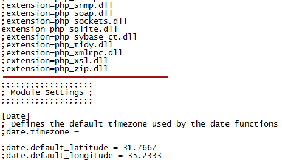

L'extension APC (AlternativePHPCache) est un système de cache avancé permettant d'accélérer la génération de vos pages PHP et une économie de travail sur le serveur. C'est ce que l'on appelle un cache d'OPCodes.
Pour faire simple, l'OPCode est le code intermédiaire compilé par PHP pour exécuter vos pages. Un cache d'OPCodes permet donc de ne plus "compiler" systématiquement chaque page appelée en fournissant une page déjà compilée et stockée dans la mémoire vive (RAM) de votre serveur.
Par exemple, admettons que j'exécute ce code :
<?php
$variable = 'BONJOUR';
echo $variable;
?>
L'OPCode généré ressemblera à quelque chose du genre :
ASSIGN !0, 'BONJOUR'
ECHO $0
En plus de mettre en cache l'OPCode de vos pages, APC fournit un "cache utilisateur" présenté dans la dernière partie de ce tuto.
Cette extension n'est pas intégrée nativement à PHP, voyons donc maintenant comment l'installer et la configurer sur votre serveur.
Ce tutoriel a été testé sous Ubuntu 11.04 et devrait fonctionner pour les versions antérieures.
Il vous suffit d'installer le paquet php-apc :
sudo apt-get install php-apc
Une fois l'installation terminée, vous devez modifier le php.ini pour activer l'extension : le php.ini se trouve par défaut dans /etc/php5/apache2/php.ini.
Ouvrez donc ce fichier en mode administrateur avec votre éditeur de texte préféré. Pour les novices, tapez :
sudo gedit /etc/php5/apache2/php.ini
ou pour ceux qui n'ont pas gedit :
sudo nano /etc/php5/apache2/php.ini
Et cherchez l'endroit du fichier où il est écrit Module settings.
Juste avant ce Module settings, écrivez extension=apc.so : cela permet d'indiquer à Apache qu'il doit utiliser cette extension.
Et juste après le Module settings, écrivez [APC] apc.enabled=1
Vous devez donc avoir un php.ini qui ressemble à ça :
Redémarrez apache (en entrant la commande /etc/init.d/apache2 restart, ou mieux : un sudo service apache2 restart) et faites un phpinfo() ; vous devriez voir ces informations affichées quelque part :
Si c'est le cas, l'extension est bien installée et activée.
Vous pouvez donc passer à la phase de configuration, décrite ci-après.
Pour installer l'extension sous Windows, c'est un poil compliqué : avant, on pouvait récupérer le fichier dll directement sur le site de PHP dédié (pecl4win.php.net), mais celui-ci est fermé depuis pas mal de temps. Maintenant, il faut se débrouiller pour trouver la DLL sur internet. Un développeur de PHP fournit heureusement une page de téléchargement d'extensions PHP précompilées pour windows : http://downloads.php.net/pierre/.
Sur ce site, on vous propose plusieurs liens pour APC. Vous devez choisir le bon fichier en fonction de votre version de PHP (par exemple, php_apc-3.0.19-5.2-Win32-VC6-x86.zip est une version d'APC pour PHP 5.2). Je ne vous conseille pas de fichier en particulier, étant donné que cette page est amenée à changer régulièrement. Faites un phpinfo() et regardez dans les lignes Compiler et Architecture, par exemple : MSVC6 (Visual C++ 6.0) et x86. Basez-vous sur ces informations pour choisir le bon ficher DLL, et si ça ne marche pas, n'hésitez pas à essayer avec d'autres DLL. Ensuite, copiez ce fichier dans le dossier contenant les extensions de PHP.
Ensuite, rendez-vous dans votre fichier de configuration php.ini : si vous utilisez WAMP, faites un clic gauche sur l'icône dans la barre des tâches, survolez PHP, et cliquez sur php.ini.
Cherchez l'endroit du fichier où les extensions sont activées, et mettez-vous juste à la dernière ligne avant Module Settings. Cela ressemble à ça :

Ecrivez ceci :
extension=php_apc.dll
Puis écrivez ceci juste en dessous du Module settings :
[APC]
apc.enabled=1
Vous venez d'activer l'extension.
Maintenant, redémarrez tous les services, et faites un phpinfo() : vous devriez voir affiché quelque part ces informations :
Si c'est le cas, l'extension fonctionne !
Vous pouvez maintenant passer à la phase de configuration.
Il y a deux décisions importantes que vous devez faire. D'abord, la quantité de mémoire partagée que vous voulez allouer à APC et ensuite, si vous voulez qu'APC vérifie si un fichier a été modifié à chaque demande.
Vous devez donc décider de combien de mémoire vive dispose l'extension. Pour la définir, rendez-vous dans votre php.ini à l'endroit où vous avez écrit apc.enabled=1, et écrivez à la suite :
apc.shm_size={mémoire en MB}
La taille par défaut est de 30 Mo : je vous conseille de l'augmenter. Tout dépend de la RAM dont vous disposez sur votre serveur, mais si vous en avez beaucoup, vous pouvez mettre plus de 100 Mo sans problème.
La seconde option à paramétrer permet de définir si APC doit vérifier à chaque génération de page que la page PHP mise en cache n'a pas changé : le paramètre à définir est apc.stat :
Citation : Documentation PHP
Par défaut, APC vérifie le script à chaque demande pour voir s'il a été modifié ou non. S'il a été modifié, il sera compilé à nouveau et la nouvelle version sera mise en cache. En désactivant cette option, aucune vérification n'aura lieu. Cela signifie que si vous voulez activer les modifications, vous devez redémarrer le serveur web. Sur un serveur de production où vous modifiez rarement le code, le fait de désactiver cette option permet de gagner en performances de manière significative.
Je n'aurais pas mieux dit :) . En gros, si vous modifiez très régulièrement votre code, mettez un apc.stat=1. Si vous êtes sur un serveur de production et que vos pages PHP sont modifiées peu souvent, mettez 0, cela améliorera les performances.
Votre php.ini doit donc ressembler à peu près à ceci :
Vous pouvez aussi obtenir plusieurs informations sur l'extension en téléchargeant la dernière version d'APC, et en mettant sur votre serveur web la page apc.php située dans l'archive que vous venez de télécharger : vous pourrez ainsi voir la quantité de mémoire utilisée et disponible pour l'extension, ainsi que plusieurs autres informations pratiques.
Le cache utilisateur est un des gros points fort de l'extension APC.
Vous devez normalement savoir que pour mettre en cache une information en PHP, on utilise généralement un fichier .txt : ce type de fichier est stocké sur le disque dur, le temps d'accès au fichier est donc relativement long.
APC, lui, permet de mettre en cache des variables directement dans la mémoire vive de votre serveur, ce qui offre des temps d'accès à l'information beaucoup plus faibles, vos scripts s'exécutent donc plus rapidement si vous l'utilisez :) .
Son utilisation est très simple, vous disposez en effet de trois fonctions : apc_add, apc_fetch, et apc_delete.
La première permet de mettre en cache une variable dans la RAM ; la deuxième, de récupérer une valeur mise en cache précédemment ; et la troisième, d'en supprimer une.
Exemple :
<?php
$nombreMembres = 200000; // Par exemple, le nombre de membres du site
apc_add('nombreMembres', $nombreMembres); // On met en cache la variable
echo apc_fetch('nombreMembres'); // Affiche 200000
apc_delete('nombreMembres'); // On supprime la variable du cache (facultatif)
?>
On peut imaginer créer par exemple un module de mise en cache basé sur ces fonctions (le cache serait ainsi accessible directement en mémoire).
Concernant la fonction apc_cache_info(), je vous laisse la découvrir dans la doc de PHP.
Le temps de génération de vos pages devrait maintenant décroître significativement sur votre site, vos scripts étant mis en cache dans la RAM de votre serveur. Le gain de temps peut aller jusqu'à 50% selon les pages ! À noter que PHP6 devrait intégrer un tel système de cache nativement.